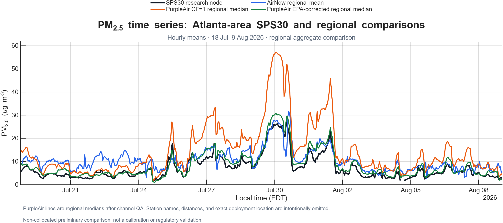

Public field report · Version 1.0
Preliminary PM₂.₅ field evaluation
A non-collocated comparison of an outdoor SPS30 research node with regional AirNow and PurpleAir observations in the Atlanta metropolitan area.
Summary
This initial evaluation asked whether hourly PM₂.₅ reported by the outdoor SPS30 node followed major changes observed across independent Atlanta-area monitoring networks. It is useful for detecting gross timing problems, offsets, and shared regional episodes before a formal collocation study.
Methods
SPS30 measurements were aggregated to UTC hourly means. An hour was retained when sensor coverage was at least 75%. Regional comparisons used preliminary AirNow observations and quality-controlled PurpleAir PMS5003 data.
PurpleAir observations were summarized across a small group of reporting sites. Hours with substantial disagreement between the two channels of an individual PurpleAir sensor were excluded. The U.S.-wide EPA/Barkjohn equation was also applied to the PurpleAir CF=1 observations:
corrected PM₂.₅ = 0.524 × CF=1 PM₂.₅ − 0.0862 × RH + 5.75
No separate relative-humidity correction was applied to the SPS30 output. Mean bias below is defined as SPS30 minus the comparison dataset.
Preliminary results
| Comparison dataset | Paired hours | SPS30 mean | Comparison mean | Mean bias | MAE | RMSE | Pearson r |
|---|---|---|---|---|---|---|---|
| Atlanta-area AirNow mean | 497 | 7.37 | 10.50 | −3.13 | 3.67 | 4.28 | 0.839 |
| PurpleAir CF=1 regional median | 497 | 7.37 | 14.55 | −7.18 | 7.18 | 9.54 | 0.981 |
| PurpleAir EPA-corrected regional median | 497 | 7.37 | 8.59 | −1.22 | 1.53 | 1.96 | 0.973 |
Concentrations and error metrics are in µg m⁻³. Values use paired hourly observations. Public reporting is intentionally limited to regional aggregate comparisons.

The SPS30 followed much of the hour-to-hour variability observed by the regional sensor groups, including an elevated late-July episode. Raw PurpleAir CF=1 concentrations were systematically higher than the SPS30 during this period. Applying the EPA/Barkjohn correction reduced the PurpleAir regional median and brought its mean closer to the SPS30 mean.
This similarity does not show that the SPS30 was unaffected by humidity, nor does it make corrected PurpleAir data a reference standard. The two sensor families use different optical designs, firmware, and proprietary transformations from scattering response to reported mass concentration.
Scientific boundaries
- No collocation. Spatial separation means local sources, rainfall, mixing height, and plume transport can produce real concentration differences.
- Short summer record. The study did not characterize winter aerosol, fog, very high concentrations, long-term drift, or seasonal transferability.
- No independent SPS30 humidity correction. The analysis cannot separate humidity effects from spatial and instrument effects.
- Comparison data are not a single reference method. Recent AirNow values are preliminary, and PurpleAir remains an optical sensor estimate after correction.
- No uncertainty or precision study. Replicate nodes and collocated reference measurements are required for defensible calibration.
Next study
The next priority is a true collocation of the SPS30 node, the planned dual-PM node, and a well-characterized comparison instrument at the same location, inlet height, and time base. A multiweek study should span a wider range of relative humidity and PM₂.₅ and retain complete high-time-resolution sensor output.
Until that work is complete, this result should be described as encouraging preliminary field consistency, not an accuracy validation or regulatory comparison.
Data governance
This public report uses regional-scale location disclosure and aggregate comparison statistics. Exact private deployment coordinates, site-distance combinations that could reveal them, device identifiers, and raw private observations are intentionally excluded. A public dataset may be released later through a deployment-specific publication review.
References
- Barkjohn, K. K., Gantt, B., and Clements, A. L. (2021), “Development and application of a United States-wide correction for PM₂.₅ data collected with the PurpleAir sensor,” Atmospheric Measurement Techniques, 14, 4617–4637. https://doi.org/10.5194/amt-14-4617-2021
- Sensirion, Datasheet SPS30: Particulate Matter Sensor.
- U.S. EPA AirNow, About the Data.
Report text © 2026 Open PM Network contributors, licensed under CC BY 4.0. Website source code remains under the MIT License. No raw sensor dataset is included with this report.